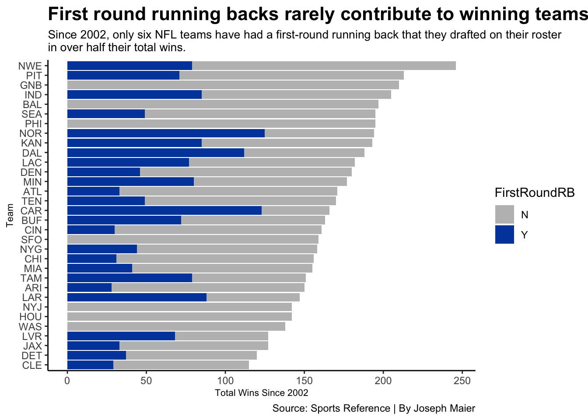
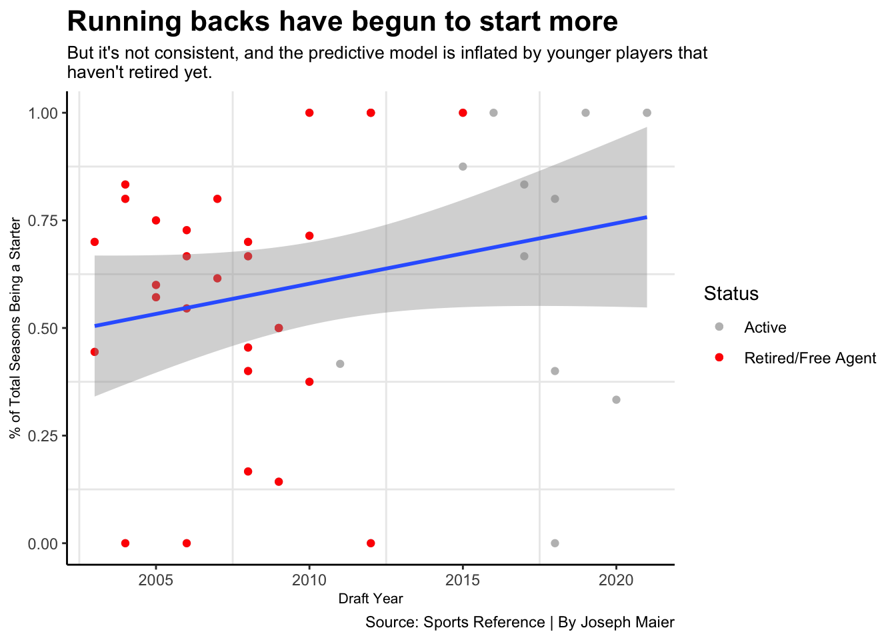

With the NFL draft just weeks away, it’s officially mock draft season. It’s also that time of year when both fans and so-called draft experts debate the respective value of each position.
Over the last several years, first-round running backs in particular have been the object of much discussion. Is drafting a running back in the first round worth it? The answer has largely been no. But just how true is that assumption? Is it based on measurable statistics?
Let’s dive into some data to see for ourselves.
First off, when talking about first-round running backs, we’ll only focus on players playing on the team that originally drafted them. Once players go elsewhere, their original team no longer reaps the benefits of using a pick on them.
Why do NFL teams care about drafting good players? Winning games of course. So does drafting a running back in the first round directly correlate to victories? Not so much.
Code
library(tidyverse)library(waffle)library(ggrepel)library(ggbeeswarm)draft <-read_csv("nfldraftrbtckl.csv") %>%filter(Season >2001 ) %>%rename(FirstRoundRB = RB1) %>%rename(FirstRoundTackle = TKL1)ggplot() +geom_bar(data=draft, aes(x=reorder(Team, W), weight=W, fill=FirstRoundRB)) +coord_flip() +scale_fill_manual(values=c("grey", "#0047AB")) +labs(x="Team", y="Total Wins Since 2002", title="First round running backs rarely contribute to winning teams", subtitle="Since 2002, only six NFL teams have had a first-round running back that they drafted on their roster in over half their total wins.", caption="Source: Sports Reference | By Joseph Maier" ) +theme_classic() +theme(plot.title =element_text(size =16, face ="bold"),axis.title =element_text(size =8), plot.subtitle =element_text(size=10), panel.grid.minor =element_blank() )

If you want to win games, running back may not be the way to go in the first round. Notice how most of the best teams over the last 20 years rarely rostered a first-round running back.
So what other position should we prioritize instead? Quarterback is obvious, but we don’t want to be drafting one of those every year. Let’s see how first-round offensive tackles stack up in the winning department.
Code
ggplot() +geom_bar(data=draft, aes(x=reorder(Team, W), weight=W, fill=FirstRoundTackle)) +coord_flip() +scale_fill_manual(values=c("grey", "darkgreen")) +labs(x="Team", y="Total Wins Since 2002", title="First-round offensive tackles help their teams much more", subtitle="A much larger portion of the NFL's total wins came with a first-round tackle on the roster since 2002", caption="Source: Sports Reference | By Joseph Maier" ) +theme_classic() +theme(plot.title =element_text(size =16, face ="bold"),axis.title =element_text(size =8), plot.subtitle =element_text(size=10), panel.grid.minor =element_blank() )
First-round big men play for winning teams much more often. But it’s a team sport, and one position can’t directly decide the outcome of games. The more a player plays, though, the more they can benefit their team.
So how often are first-round running backs starters on their teams? Surprisingly, more often as of late.
Code
library(tidyverse)library(ggrepel)library(cowplot)draft <-read_csv("finalprojecttest2.csv")runningbacks <-read_csv("draft.csv")tackles <-read_csv("tackledraft.csv")rbretired <- runningbacks %>%filter(Rnd <2, To <2022,From >2002)rbAll <- runningbacks %>%filter(Rnd <2, From >2002)tretired <- tackles %>%filter(Rnd <2, To <2022, From >2002)tAll <- tackles %>%filter(Rnd <2, From >2002)RBStPerYr <- rbAll %>%mutate(YearsPlayed = (To-From +1)) %>%mutate(StartingYearsPerYearPlayed = (St/YearsPlayed)) %>%mutate(StartsPerYear = (GS/YearsPlayed))TStPerYr <- tAll %>%mutate(YearsPlayed = (To-From +1)) %>%mutate(StartingYearsPerYearPlayed = (St/YearsPlayed)) %>%mutate(StartsPerYear = (GS/YearsPlayed))RBStPerYrRetired <- RBStPerYr %>%filter(To <2022)TStPerYrRetired <- TStPerYr %>%filter(To <2022)RBStPerYrOld <- RBStPerYr %>%filter(From <2016)TStPerYrOld <- TStPerYr %>%filter(From<2016)ggplot() +geom_point(data= RBStPerYr, aes(x= Year, y= StartingYearsPerYearPlayed, color="Active")) +geom_point(data= RBStPerYrRetired, aes(x= Year, y= StartingYearsPerYearPlayed, color ="Retired/Free Agent")) +geom_smooth(data=RBStPerYr, aes(x=Year, y= StartingYearsPerYearPlayed), method="lm") +scale_color_manual(name="Status", values=c("grey", "red")) +labs(x="Draft Year", y="% of Total Seasons Being a Starter", title="Running backs have begun to start more", subtitle="But it's not consistent, and the predictive model is inflated by younger players thathaven't retired yet.", caption="Source: Sports Reference | By Joseph Maier" ) +theme_classic() +theme(plot.title =element_text(size =16, face ="bold"),axis.title =element_text(size =8), plot.subtitle =element_text(size=10), panel.grid.minor =element_blank() +scale_y_continuous(labels = scales::percent_format(accuracy =1)) )

The younger running backs have been consistent starters, but it’s probably too early to judge their full careers yet. If the retired players tell us anything, we can expect first-round running backs to start around 50% of their total seasons on average. Let’s compare that to offensive tackles.
Code
ggplot() +geom_point(data= TStPerYr, aes(x= Year, y= StartingYearsPerYearPlayed, color="Active")) +geom_point(data= TStPerYrRetired, aes(x= Year, y= StartingYearsPerYearPlayed, color ="Retired/Free Agent")) +geom_smooth(data=TStPerYr, aes(x=Year, y= StartingYearsPerYearPlayed), method="lm") +scale_color_manual(name="Status", values=c("grey", "red")) +labs(x="Draft Year", y="% of Total Seasons Being a Starter", title="First-round offensive tackles are usually career starters", subtitle="Despite the slight downtick, the predictive model consistantly hovers around 75% of total seasons being a starter.", caption="Source: Sports Reference | By Joseph Maier" ) +theme_classic() +theme(plot.title =element_text(size =16, face ="bold"),axis.title =element_text(size =8), plot.subtitle =element_text(size=10), panel.grid.minor =element_blank() +scale_y_continuous(labels = scales::percent_format(accuracy =1)) )
`geom_smooth()` using formula = 'y ~ x'
The predictive model is trending down, but the data is much more consistent. Look how much higher the retired tackles cluster is here than in the previous chart. If you want a player who will be a starter in most of his total seasons, tackle is the way to go.
But that doesn’t give us the whole story. What if someone played just one season, but was a starter during it? That wouldn’t justify a first-round selection.
So let’s strip this data down solely for total seasons being a starter.
Code
ggplot() +geom_point(data= RBStPerYrOld, aes(x= Year, y= St, color="Running Backs")) +geom_point(data= TStPerYrOld, aes(x= Year, y= St, color ="Offensive Tackles")) +geom_hline(yintercept=6.930233, color="#50C878") +geom_hline(yintercept=4.517241 , color="#0047AB") +scale_color_manual(name="Position", values=c("#50C878", "#0047AB")) +scale_x_continuous(limits =c(2002, 2015)) +labs(x="Draft Year", y="Seasons being a Starter", title="Drafting a first-round offensive tackle is the safer bet", subtitle="Among players drafted between 2002-2015, only five first-round running backs started more seasons than the average for first-round offensive tackles", caption="Source: Sports Reference | By Joseph Maier" ) +theme_classic() +theme(plot.title =element_text(size =16, face ="bold"),axis.title =element_text(size =8), plot.subtitle =element_text(size=10), panel.grid.minor =element_blank() )
Tackles are starters for more seasons on average, nearly a 2 1/2 season advantage over first-round running backs.
Enough about tackles, though, we’re focused on running backs. We need running backs on our roster, so what round should we draft them in?
To be fair, there’s a noticeable drop off in average career length from round one to round two. On average, a running back will play .5 fewer years per round he’s drafted in after the first round.
Does that justify drafting a running back in the first round? That’s up to you. But it’s certainly not as bad of a decision as many have made it seem.